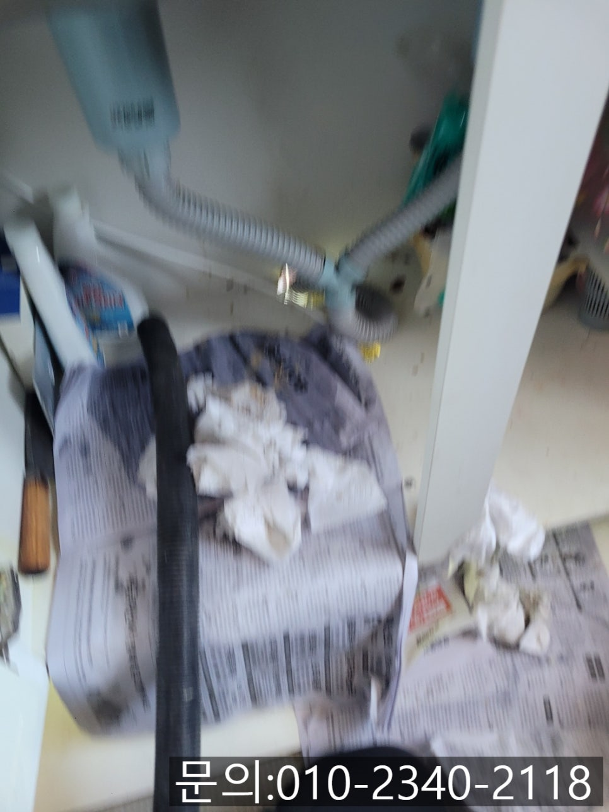
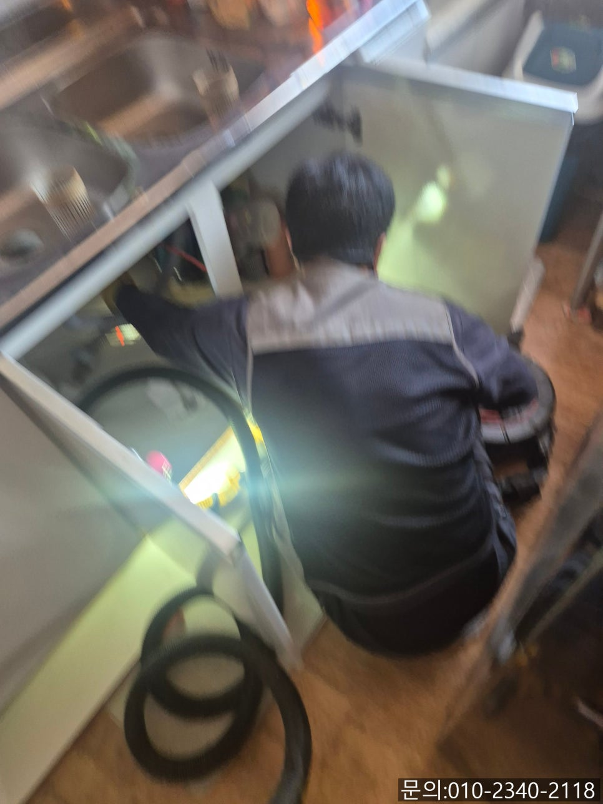
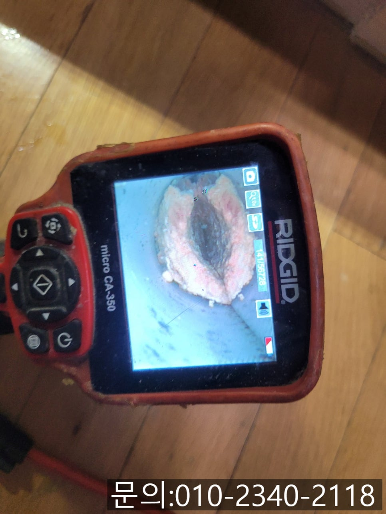
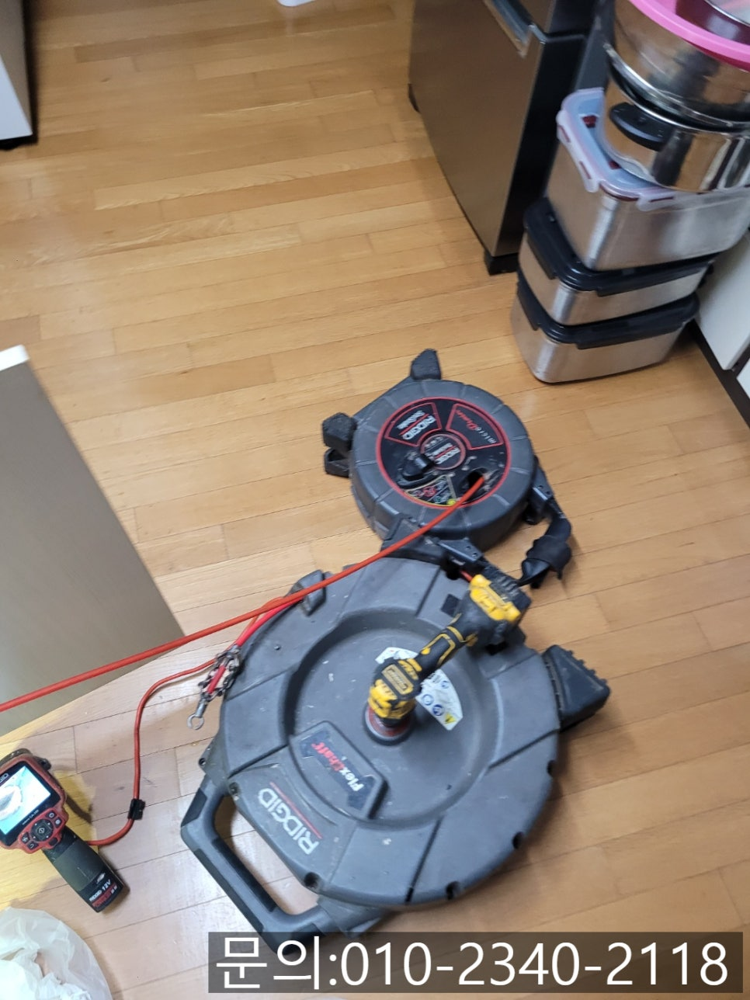
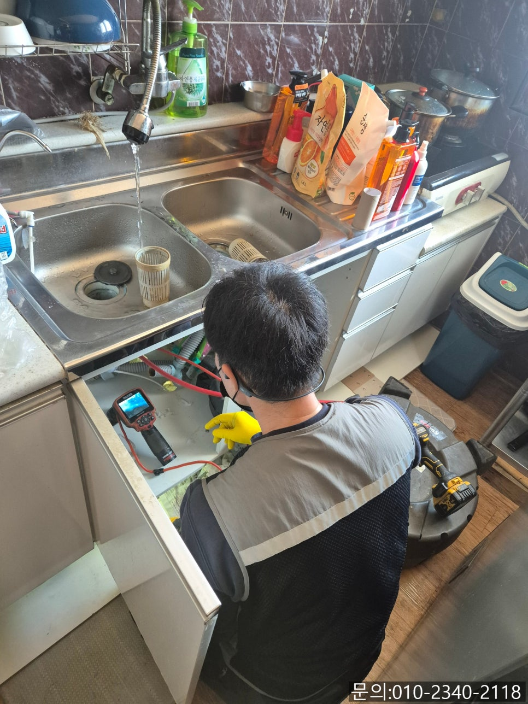
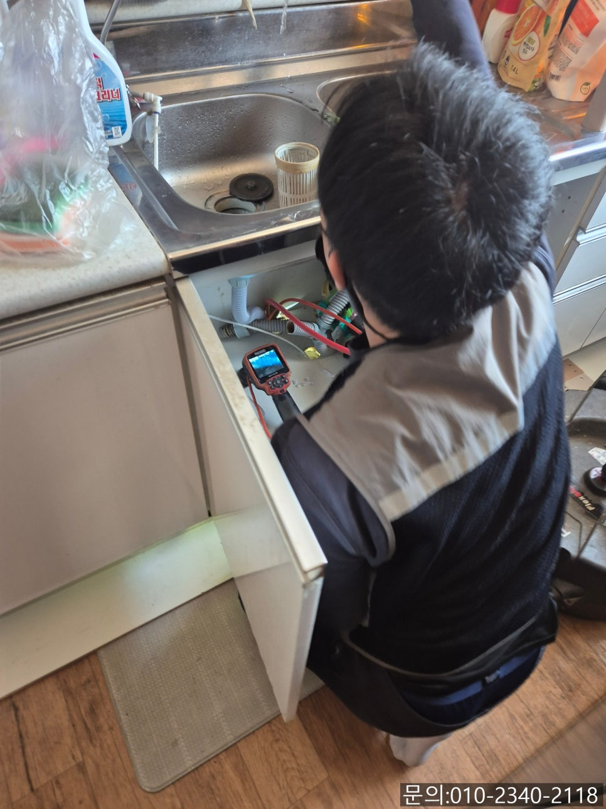

🏠 산성동 싱크대 막힘 성남 복정동 하수구 배관 역류 넘침 뚫는 비용
성남 싱크대막힘 전문 시공 후기

📋 작업 개요
- 위치: 성남
- 서비스 유형: 싱크대막힘, 하수구막힘, 배관막힘, 역류해결, 뚫는업체
- 작업 일시: 2025. 4. 22. 21:14
- 업체명: 하수구수사대 (010-5615-2118)
🔍 문제 상황
안녕하세요.
산성동 싱크대 막힘, 성남 복정동 하수구 배관 역류, 넘침 뚫는 비용에 대해 소개해 드릴 하수구 다큐입니다.
산성동 싱크대 막힘이 발생하게 되면 대부분의 고객님들은 하수구 전문가를 섭외하시는 걸 어려워합니다.
아무래도 산성동 싱크대 막힘을 해결하는 비용 때문일 거예요.
그래서 오늘은 산성동 싱크대 막힘으로 연락을 받고 방문해 작업한 내용을 소개해 드리면서 싱크대 막힘을 해결하는 비용에 대해서도 설명해 드리겠습니다.
성남 복정동 하수구 배관 역류, 넘침 뚫는 비용을 문의하시는 고객님의 전화를 받으면 하수구 다큐 역시 정확한 금액을 안내해 드리고 싶습니다.
하지만 고객님들의 설명을 들어도 현장마다 배관의 크기나 구조가 모두 다르고 막힘의 정도 역시 다르기 때문에 금액을 안내해드릴 수 없는 상황이에요.

🔎 원인 분석
💡 전문가 진단: 정밀 진단 장비를 사용하여 슬러지의 고착 여부를 판명하고 타격/세척 작업을 실시했습니다.
여러 번 문의하시는 고객님께 들은 설명을 토대로 금액을 말씀드렸다가 현장에 직접 방문해 보면 설명과 다른 경우가 많아 뚫는 비용 역시 달라져 서로 불편한 경험을 여러 번 하다 보니 어떤 현장이던 직접 방문해 정확한 원인을 파악하고 발생되는 비용을 안내해 드리고 있습니다.
하수구 다큐가 견적을 보고 말씀드린 금액이 비싸다고 생각하시는 분들도 가끔 있는데요.
그런 경우에는 작업을 맡기지 않으셔도 괜찮으니 언제든지 편하게 무료 견적 받아보셔도 좋을 것 같습니다.
오늘은 주방에서 물을 쓰면 주름 배관에서 물이 샌다는 연락을 받고 현장으로 달려갔습니다.
필요한 장비를 챙겨 주방으로 들어가 보니 고객님께서 말씀하셨던 것처럼 싱크대에서 사용한 물이 흘러나와 주방이 엉망인 상태였어요.
우선 급한 대로 석션을 사용해 물을 제거하고 원인을 확인해 보기로 했습니다.
주름 배관의 노후로 인해 작은 구멍이 첫 번째 원인이었습니다.

🔧 작업 과정
하지만 작은 구멍의 경우 사용한 물이 흘러가면서 조금씩 세어 나와야 하는 게 정상인데, 성남 복정동 하수구 배관 역류, 넘침 현장의 경우 구멍에 비해 많은 양의 물이 넘치는 상태로 배관 내부의 점검도 필요해 보였어요.
배관 전용 내시경 카메라를 이용해 점검해 보니 기름 슬러지가 물의 흐름을 방해하고 있었습니다.
주방에서 많은 양의 물을 사용하자 기름 슬러지로 인해 물의 흐름을 방해하면서 역류하고, 주름 배관까지 올라와 넘쳤던 것 같아요.
고객님께 배관 내부에 쌓인 이물질로 인해 막힘과 역류가 발생하는 상황에 대해 설명해 드리고, 작업 비용, 소요 시간 등 자세히 말씀드린 다음 작업을 진행하기로 했습니다.
이번 현장의 경우 배관 막힘뿐 아니라 주름 배관 교체까지 동시에 진행해야 합니다.
우선 플렉스 샤프트 장비를 사용해 배관 내부를 막고 있는 기름 슬러지 덩어리를 제거하기로 했습니다.
플렉스 샤프트 장비는 노즐 끝에 달린 체인이 배관 내부에서 강하게 회전하면서 기름 슬러지를 작게 부서 주는 역할을 합니다.
작게 갈린 기름 슬러지는 물과 함께 흘려보내거나 석션을 사용해 빨아드리는 작업으로 배관에서 완전하게 제거해요.
플렉스 샤프트로 작업을 진행할수록 기름 슬러지가 사라지고 깨끗해지는 배관 내부를 확인할 수 있었습니다.
큰 기름 슬러지 덩어리가 막고 있던 게 믿기지 않을 정도로 깨끗해진 배관 내부를 확인할 수 있었어요.
통수 테스트에 앞서 주름 배관을 교체하는 작업을 하기로 했습니다.
구비하고 있던 주름 배관을 하수구로 연결해 드렸고요.


✅ 작업 완료
많은 양의 물을 한 번에 흘려보내 다른 문제점은 없는지 꼼꼼하게 테스트도 진행해 드렸습니다.
고객님과 함께 아무런 문제가 없는 것을 확인하고 작업을 마무리할 수 있었어요.
경기도 평택시 고덕중앙로 322 4층 129호




⚠️ 주방 싱크대 배관 막힘 예방 수칙
- ✅ 기름기가 묻은 식기나 프라이팬은 설거지 전 키친타올로 반드시 기름때를 닦아내세요.
- ✅ 주기적으로 싱크대 개수대에 뜨거운 물을 가득 받아 한 번에 내려 배관 내부 기름을 씻어내세요.
- ✅ 배수구 거름망을 미세한 필터로 사용하시고 음식물 찌꺼기가 틈으로 새어 들지 않게 관리하세요.
- ✅ 베이킹소다와 식초를 뜨거운 물과 함께 일주일에 한 번씩 부어주면 배관 살균과 막힘 예방에 좋습니다.
💡 핵심 정리
- 확실한 장비 작업(내시경 점검 및 샤프트 스케일링)으로 원인을 뿌리 뽑습니다.
- 작업 후 1년 이내에 동일한 부위 재발 시 100% 무상 A/S 서비스를 보장합니다.
- 서울 · 경기 · 인천 전 지역에 24시간 언제든 긴급 출동할 수 있도록 항시 대기 중입니다.
❓ 자주 묻는 질문 (FAQ)
🚨 성남 싱크대막힘 문제로 고민이신가요?
정확한 원인 진단과 확실한 시공으로 재발 없는 해결을 약속드립니다.
24시간 긴급 출동 | 서울 · 경기 · 인천 전지역 | 1년 내 재발 시 무상 A/S